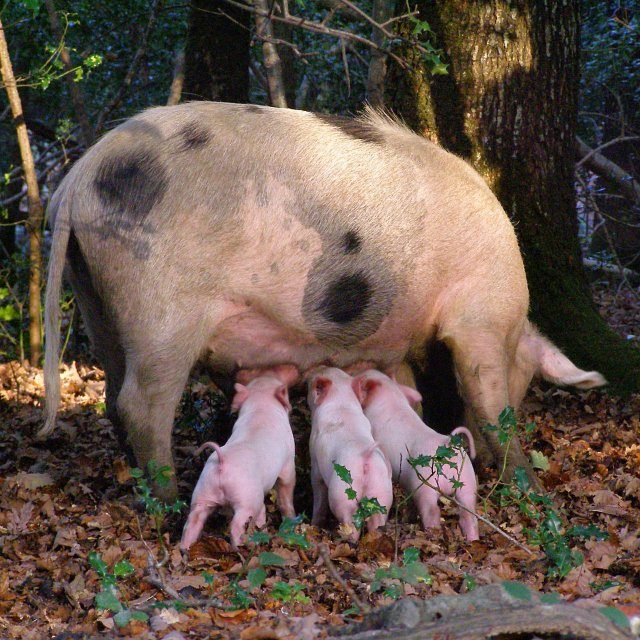
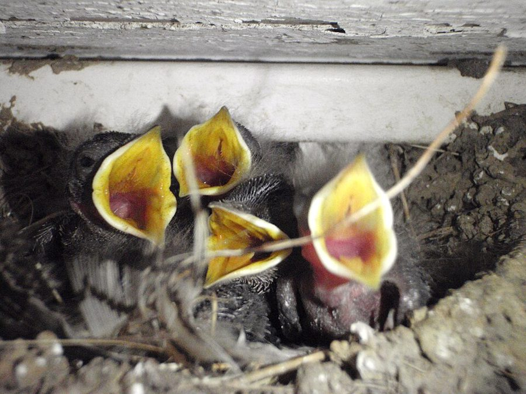

这一页在做什么
第 8 章的前半。第 7 章问一窝生几个，这一章接着问：生下来的几个孩子之间，资源怎么分，孩子自己会不会争。Dawkins 先借 Trivers 的「亲代投资」立一个记账单位，从母亲的角度推她什么时候会偏心（小个子、断奶、停经），再换到孩子的角度，转述 Trivers 1974 年的亲子冲突。读的时候抓两条线：同一口奶，母亲和孩子各自怎么算账；书里的「应该」「想要」都是比喻。

英格兰新森林里散放的母猪在给小猪喂奶。这一页两次拿猪作例子：第 7 段说母猪有时会吃掉自己的小猪，第 15 段说一窝小猪会尖叫着抢先挤到母猪身边。Jim Champion，CC BY-SA 2.0，维基共享资源 读之前：这一页在全书的哪里
第 7 章末尾（第 35 段）预告了这一章的问题：母亲会不会有偏爱，一个家庭里会不会有自私和欺骗。第 1 段作者照例先打招呼，「偏爱」不带主观含义，「应该」不带道德含义。第 6、22 段回指第 7 章 Lack 的窝卵数，第 11 段回指第 3 章 Medawar 的衰老理论，第 14 段的亲属利他接的是第 6 章。下一页（§5 起）转到孩子的手段：欺骗、讹诈、推蛋，以及谁会赢。
母亲和孩子的亲缘无论从哪头算都是一半。那为什么两边对「这个孩子该再吃多少奶」会意见不合？
读的时候带着这几个问题。不用先找答案，读完回来对照「检查一下理解」。
作者为什么不用卡路里来记父母的付出？换成什么单位以后，账才算得对？§1
只能救一个孩子时，母亲偏向大的；分一口吃的时，她却可能偏向小的。这两个结论矛盾吗？§2
作者对停经的解释，靠的是哪两个数的比较？他对这个解释有多大把握？§2
孩子想多吃，但「只到某一点为止」。那一点为什么正好是两倍，不是三倍、不是一倍？§3
这一页的路线
这一页是同一本账从两个角度各算一遍。§1 先不讲动物，讲记账单位：父母付出的东西五花八门，需要一种通货；第 5 段作者还挑了这个单位一个毛病，随即说不碍事。§2 站在母亲一边算：亲缘对每个孩子都一样，偏心只能来自孩子「用得上」多少，由此推出小个子、救大的、喂小的、断奶。第 10 段突然转到人类女性的停经，读到这里会觉得跳。这一段书里没有标出处；停经的适应解释在他之前就有人提过（见对照今天），作者在这里用这一章的账把它算了一遍。§3 换到孩子一边，转述 Trivers 1974 年的文章：把「自己算两倍」放进账里，得出一条界线和一段有分歧的时期。§4 回到鸟窝，看分歧怎样变成行为；第 22 段又倒回母亲的角度补一笔。第 23 段起作者转去讲孩子的战术，那是下一页。
母亲的眼光
孩子的眼光
记账单位 §1
小个子 §2
救大喂小 §2
断奶 §2
停经 §2
自己算两倍 §3
分歧期 §3
乞食叫声 §4
认命 §4
多下一个蛋 §4
本站示意图。上面一行是从母亲的角度算的账，下面一行是从孩子的角度算的账，折线是阅读顺序。§4 的最后一段又回到母亲那一边。 作者落在哪： 母亲对每个孩子的亲缘一样，只按孩子能从投资里得多少好处来分；孩子却把自己算作弟妹的两倍，总想多要一点。两本账在一段范围里对不上，冲突是量上的，不是你死我活。
分节地图
这一页是原书第 8 章的第 1–4 节。原书各章没有小标题，粗体的节名是本站起的，下面是这一节第一段开头的几个词，在电子书里搜它就能跳过去。读完打个勾。
亲代投资：育儿的通货约 900 词 Let us begin by tackling the … 立记账单位。第 1 段是全章的免责声明；第 4 段单引号里是 Trivers 的定义原话；第 3 段末尾有星号（注 42）。 偏爱谁：小个子、断奶与绝经约 1000 词 The answer is that there is … 母亲的角度。第 7–9 段推出几种偏心，第 9 段中间引出断奶；第 10–12 段讲停经，作者说这只是一种可能的解释。 断奶之争：特里弗斯的亲子冲突约 1200 词 So far, in this chapter and … 孩子的角度，转述 Trivers 1974 年的文章。第 16 段末尾得出「两倍」的界线，第 17–18 段用断奶说明分歧落在哪段时间。 雏鸟的尖叫与认命的小个子约 600 词 Many baby birds are fed in … 落到鸟窝：第 20 段叫声为什么越来越响，第 21 段小个子的「不归点」，第 22 段倒回母亲的角度。
先用中文过一遍：这一页的概念
先把这一页用到、作者默认你懂的几个概念讲一遍。讲的是概念本身，作者拿它推出什么，读原书时自己看。前几章讲过的亲缘关系指数 、亲属选择 、汉密尔顿法则 、最适窝卵数 、衰老的演化解释 ，点进去看。
§1 亲代投资 parental investment, P.I. Trivers 1972 年提出的概念：父母在某一个孩子身上的任何付出，只要它提高了这个孩子活下来（从而将来繁殖）的机会，同时减少了父母还能投在别的孩子身上的那一份，都算亲代投资。要点在计量单位：不数花了多少卡路里、多少小时，而数「别的孩子因此少了多少活命的机会」，包括还没出生的。程序员熟悉的说法是机会成本：评估一项工作，不看写了多少行代码，看它挤掉了哪些别的事。付出不只是食物，还有冒的风险、花的时间和力气。Trivers 当初提出它，是为了解释两性：在后代身上投资多的一方成了稀缺的资源，另一方为它竞争，这是第 9 章的事。
在这一页： 第 3 段引入，第 4 段给定义。后面每一笔账（偏心、断奶、停经、亲子冲突）都用它来记。第 5 段作者挑了它一个小毛病。
§2 停经的适应解释 menopause 人类女性一般在五十岁上下停止生育，之后往往还能活很多年。多数哺乳动物的雌性到老都还能生，停止生育后还要活很久、常被拿来和人对照的，主要是几种齿鲸（如虎鲸、短肢领航鲸）。于是有一个问题：自然选择为什么会留下一个提前退出繁殖的性状？「适应解释」认为它不只是衰老的副产品，而是有好处。一种思路是年纪大了生育风险高，不如把力气用在已有的孩子身上；另一种是转去帮子女抚养孙辈，后来叫「祖母假说」，书里还没有这个名字。两种都要拿数字去比：停下来损失多少，帮忙又赚回多少。
在这一页： 第 10–12 段，作者用的是第二种思路，拿亲缘关系和孙辈的存活机会算账；他自己说这是一种可能的解释。
§3 亲子冲突 parent-offspring conflict Trivers 1974 年的论文提出。直觉上父母和孩子利益一致，Trivers 指出并不完全一致。孩子身上一定带着自己的每一个基因，弟妹带着同一个基因的机会只有一半，所以在孩子的账上，自己得的好处算一份，弟妹受的损失只算半份；母亲对每个孩子一视同仁，都算半份。设这口奶给眼前这个孩子的好处是 B，让弟妹损失的是 C：母亲觉得 C 小于 B 才该喂，孩子觉得 C 小于 2B 就该喂。C 落在 B 和 2B 之间时，两边意见不合。类比：两个进程共用一个资源池，调度器按公平分配，每个进程却把自己的权重算成别人的两倍，它要的不是全部，只是比调度器肯给的多一点。
弟妹因他吃奶受的损失 ÷ 他自己得的好处
0
1
2
比值 1：母亲的界线
比值 2：孩子的界线
都同意：继续喂
分歧期
母亲想断奶
孩子还想吃
都同意：断奶
孩子长大 →
本站示意图，曲线的形状是随手画的，只表示比值随孩子长大而上升。孩子越大，同一口奶对他越不要紧，对弟妹的损失相对越大。比值过 1，母亲就想断奶；过 2，孩子自己也愿意断。阴影是两条界线之间的分歧期。 在这一页： 第 13 段点出 Trivers 1974，第 16 段末尾得出两倍的界线，第 18 段说分歧落在中间那段时间。这个词的译名是译本：「亲代与子代间的冲突」
书里的人和研究
按在书里出现的顺序排，标题前是节号。只讲到读懂这一页需要的程度。
§1 Trivers 和「亲代投资」第 3 段说的是 Trivers 1972 年的文章《亲代投资与性选择》，收在一本纪念达尔文《人类的由来》出版一百年的论文集里。他提出这个概念，本来是要解释两性的差别（第 9 章会用到）。1974 年他在《American Zoologist》上发表《亲子冲突》，那是这一页 §3 的底本。作者在注 42 里说，第 8 章主要是 Trivers 的思想。
Robert L. Trivers 1943–2026 美国演化生物学家。1970 年代初的几篇论文提出了相互利他、亲代投资、亲子冲突，这本书第 8、9、10 章大量转述他；本书第一版的序言也是他写的。在这一页里，他是作者转述的主要理论家。
§1 Fisher 和「亲代支出」Ronald A. Fisher，1952 年夏在美国北卡罗来纳州 Asheville 的一次统计学会议上。Barry Eagel，CC BY-SA 4.0，维基共享资源 第 3 段括号里，作者说读 Fisher 1930 年的《自然选择的遗传理论》，从排得密密麻麻的字里行间，能感到他说的「亲代支出」和 Trivers 的意思差不多。这是作者自己的读法（one feels），不是说 Fisher 先提出了亲代投资。「二十世纪最伟大的生物学家」也是作者对 Fisher 的评价。第 9 章讲性比率时，Fisher 还会出场。
Ronald A. Fisher 1890–1962 英国统计学家、遗传学家，方差分析、实验设计等现代统计方法的奠基人，也是把孟德尔遗传和自然选择合在一起的群体遗传学的创立者之一。
§2 一窝里的小个子runt 指一窝幼崽里个头最小、最弱的那只，猪、狗这类一胎多崽的动物里常见。第 7 段作者从母亲的角度说：小个子带的母亲的基因和别的孩子一样多，可要多吃才追得上，有时不喂它反而划算。他提到母猪有时会吃掉自己的小猪，但说自己不知道它们是不是专挑小个子。第 21 段从小个子自己的角度、第 22 段又从母亲的角度各回来一次。
§2 回指的两个理论：Lack 和 Medawar第 6、22 段回指第 7 章的 Lack 理论（最适窝卵数 ）：生得太多养不活，生得太少孙辈少。第 11 段回指 Medawar 的衰老理论（衰老的演化解释 ）；原文写的「page 40」是纸书页码，在电子书里就是第 3 章的「梅达沃的衰老理论」那一节。作者只说老年妇女带孩子越来越吃力「也许」和它有关。
§3 Trivers 1974：《亲子冲突》第 13 段作者称这篇文章分析得「精彩」。§3 从「母亲对自己的亲缘是对孩子的两倍」，到孩子的两倍界线，再到断奶时那段有分歧的时期，都是在转述它。本站的理解是：它是一个理论推论，只要孩子和弟妹的亲缘小于 1，分歧就一定存在。作者在 1989 年的注 42 里说，后来更细的数学和遗传模型证实，Trivers 的文字论证确实能从公认的达尔文理论推出来。
§4 张嘴乞食的雏鸟
刚孵出不久的家燕雏鸟在巢里张嘴乞食。下一页作者还会讲燕子：西班牙的实验里，一只雏燕把喜鹊蛋推出了巢。Kati Fleming，CC BY-SA 3.0，维基共享资源 许多鸟的雏鸟孵出时不会自己找吃的，全靠亲鸟一口口喂。亲鸟一落到巢边，雏鸟就伸长脖子、张大嘴、高声叫。第 20 段作者用它讲：叫声本来可以老实报告饿的程度，为什么会被夸大，夸大了又为什么降不下来。他说叫得响要耗体力，还会招来捕食者。后来有人用录音做过实验：在人工巢边播放雏鸟的乞食叫声，这些巢比不放叫声的更早被捕食者找到（Leech 和 Leonard 1997 年用的是树燕的叫声）。
词与短语
按节排，每节前面是分节地图里的节名。标着「每个字都认识」的，是熟词生义、习语和反话，最容易读错。灰色的那几个字是原句里的位置，在电子书里搜它就能找到。
§1 亲代投资：育儿的通货
at the risk of being boring
… At the risk of being boring, I …
哪怕会让人觉得啰嗦
at the risk of doing 是「冒着……的风险」。作者自嘲：同样的声明他已经说过好几遍了。
throw in
… yet again throw in my customary warning.
（顺便）插进来、附上
throw in 不是「扔进去」，是附带加上一句。customary warning 是「照例的提醒」，指他每到用拟人说法时都要说明的那几句。
carries no subjective connotations
… carries no subjective connotations, and the word …
不带主观上的含义
全章的钥匙：「偏爱」不是说母亲心里喜欢谁，「应该」也不是道德上该不该。读到后面「孩子应该撒谎」「小个子应该死去」时，回到这一句。
the language of purpose as a metaphor
… the language of purpose as a metaphor …
把讲目的的语言当比喻用
作者交代他的写法：人知道「有目的」是什么感觉，所以借这种说法讲生存机器，图的是好懂。比喻的一头是人的打算，另一头是基因被选择的统计结果。
common currency
… think of a common currency in which …
通用的货币（统一的计量单位）
作者接着拿钱打比方：钱能换食物、土地、工时，所以能拿来比较一切。他要给父母的付出找一种这样的「钱」。
gold standard
… the currency that really matters, the …
金本位
原文 gold-standard 加了引号。金本位下纸币最终要能兑成黄金；作者说在演化里，最终的「黄金」是基因的存活，卡路里只能粗略地兑过去。
reading between the close-packed lines
… reading between the close-packed lines, one feels …
从（Fisher）排得密密麻麻的字里行间读出来
read between the lines 是「读出字面以外的意思」；close-packed 是「挤得满满的」，暗指 Fisher 的书出名地难读。后面的 one feels 说明这只是作者的感觉。
the beauty of
… The beauty of Trivers’s parental investment is …
……的妙处在于
beauty 在这里不是「美丽」，是「巧妙、好用的地方」。
units of detriment
… but in units of detriment to other …
以（对别的孩子的）损害为单位
detriment 是「损害」。这一段的意思：一品脱奶的代价，按它让别的孩子少了多少活命机会来算。
just a quibble
… this is just a quibble, and Trivers’s …
只是吹毛求疵
quibble 是在小地方挑剔。作者先挑了亲代投资一个毛病（只算子女，不算侄甥和自己），接着说这点挑剔不要紧，Trivers 的单位很好用。
spread too thinly
… not spread her investment too thinly among …
摊得太薄
spread oneself too thin 是「摊子铺太大、每样都顾不过来」。这里指孩子生太多，每个都分不到够用的一份，这是第 7 章 Lack 理论的结论。
spoilt brats
… to too few children—spoilt brats.
被惯坏的小孩
brat 是「讨厌的小孩」，英式口语。作者的玩笑：孩子生太少，资源全堆在少数几个身上。
so much for
… So much for even-handed investment policies.
关于……就说到这里
so much for X 是收束一个话题，转入下一个；口气里也常带一点「X 不过如此」。这里是说「一碗水端平」的情况讲完了，下面讲偏心。
§2 偏爱谁：小个子、断奶与绝经
better life insurance risks
… are better life insurance risks than others.
更值得承保的对象（更可能活下去）
保险业里 a good risk 指出事可能性小、值得承保的人，不是「风险更大」。回指第 6 章把利他比作人寿保险的说法。
runt
… An under-sized runt bears just as …
一窝里最小最弱的崽
本页的主角之一，第 21、22 段还会出现。
litter mates
… his more thriving litter mates.
同窝的兄弟姐妹
litter 是一胎生下的一窝幼崽。
feed him to
… pay her to feed him to his …
把他拿去喂（别人）
feed X to Y 是「把 X 给 Y 吃」，不是「喂 X」。作者是说：小个子可能被喂给兄弟姐妹吃，或者被母亲自己吃掉、化成奶。
pick on
… whether they pick especially on runts.
专挑（某个）下手
pick on 平时是「欺负、找茬」，这里是「专挑……」。整句是作者的老实话：母猪吃小猪是有的，是不是专吃小个子，他不知道。
a straight choice
… If she has a straight choice between …
非此即彼的选择
straight 在这里是「干脆的、没有中间路线的」。只能救一个，另一个必死，这是「生死二选一」的情形。
stands to lose
… because she stands to lose a higher …
会损失、可能损失
stand to lose / gain 是「有可能失去 / 得到」，和「站」无关。
her best bet
… her best bet might be to prefer …
她最稳妥的做法
best bet 是「最好的选择」，不一定和打赌有关。注意 might be：作者说的是可能。
well into adulthood
… suckle him well into adulthood.
一直喂到他成年以后很久
well into 是「深入到……之中」，well 表程度。作者是在推演极端情形：确知这是最后一个孩子的母亲，也许会一直喂下去。
change of life
… the abrupt change of life in women …
更年期
the change of life 是更年期的委婉说法，不是「生活的变化」。
until she dropped
… having children until she dropped, even …
一直生到倒下为止
until one drops 是「直到累垮、死去」，口语里常说 shop till you drop。
tails off
… the fertility of males tails off gradually …
逐渐减弱
tail off 是「慢慢变少、变弱」。和女性的「突然」停经对照。作者说男性这样的原因 probably 是对每个孩子投入得少，是推测。
sire
… Provided he can sire children by young …
（作为父亲）让……出生
sire 作动词多用于马、狗的配种，用在人身上有点冷冰冰的生物学口气。
§3 断奶之争：特里弗斯的亲子冲突
other things are not equal
… but other things are not equal.
可其他条件并不相同
接着前一句的 other things being equal（其他条件相同时）说。作者的意思：只论亲缘，母亲该把大部分资源留给自己；但孩子小、更需要帮助，同样的投资在孩子身上收益更大。
a fair proportion of
… investing a fair proportion of her resources …
相当大的一部分
fair 在这里是「不小的、可观的」，不是「公平的」。和下一段的 fair share（应得的一份）对照着读。
fair share
… try to grab more than his fair share.
应得的那一份
这里的 fair 才是「公平的」。全章反复出现，指母亲眼里平均分配时该给他的那份。
first on the scene
… squealing to be first on the scene …
抢先到场
on the scene 是「在现场」，常说警察、记者先到现场。这里是小猪抢先挤到母猪身边。
there is more to it than this
… But there is more to it than this.
事情没这么简单
字面「这里头还有更多」。作者提醒：孩子不只是贪，他对弟妹也有一半的利他理由。
up to a point
… investment, but only up to a point.
在一定程度上；到某个限度为止
up to a point 是常见习语「在某种程度上」。作者接着问 Up to what point?，把习语拆开来当字面的「到哪一点」，然后真的给出那一点：弟妹的损失是他得益的两倍。
work for his living
… go out and work for his living.
自己出去谋生
work for a living 是「靠干活养活自己」。拿人说动物，是作者的玩笑。
fend for himself
… more capable offending for himself if …
自己养活自己
fend for oneself 是「自谋生路」。电子书这里少了一个空格，offending 应读作 of fending，和 offend（冒犯）无关。
not an absolute one, but a quantitative one
… is not an absolute one, but …
不是绝对的，是量上的
这一节的落点：母亲和孩子不是要不要喂的对立，只是喂到什么时候的分歧。
taking the part of
… with the mother taking the part of …
站在……一边
take the part of 是「替……说话、维护」，不是「拿走……的一部分」。断奶之争也可以看成孩子和未出生的弟妹之争，母亲替后者出头。
anxious to see fair play
… will normally be anxious to see fair play.
一心想要公平
anxious to 是「急于、很想」，不是「焦虑」。fair play 原指比赛守规则。
§4 雏鸟的尖叫与认命的小个子
gape
… They all gape and scream, and …
张大嘴
鸟类学里 gape 专指雏鸟张嘴乞食，嘴角那圈颜色也叫 gape。
in the best of all possible worlds
… happen in the best of all possible worlds, if …
在理想世界里（带讽刺）
典出 Voltaire 的小说《老实人》：书里的 Pangloss 博士遇到什么灾难都说「这是所有可能的世界里最好的一个」，嘲讽 Leibniz 式的乐观。这里是反话：只有在没人作弊的世界里，叫声才会老实。
de-escalate
… However, it cannot de-escalate, because …
降级、缓和下来
escalate / de-escalate 常用在冲突和军备上。谁先小声谁少吃，所以叫声只升不降。
die gracefully and willingly
… the runt should die gracefully and willingly.
体面而甘心地死去
全页最刺耳的一句，要照第 1 段的声明读：should 是「会被自然选择偏爱」，不是道德要求；作者紧接着就把它翻译成基因语言。
a point of no return
… There should be a point of no return …
不归点
原是航空用语：飞过这一点，油就不够飞回去了。这里指小个子虚弱到某个程度，再挣扎就不划算。
cut her losses
… If not, she can cut her losses.
及时止损
cut one’s losses 是「趁损失还小时收手」，不是「削减损失」这么字面。年景不好，就让多下的那只先死。
hedging of the mother’s bets
… represents the hedging of the mother’s bets.
母亲两头下注（留的后手）
hedge one’s bets 是「两边都押一点，免得全输」。多下一个蛋：年景好赚一个孩子，年景差损失有限。
译本勘误
对着中译本（40 周年增订版）读的时候看这一节。下面是译本这几节和这一页尾注里会让人读错的地方：灰字是英文原文那一处的几个词，在英文电子书里搜它；方框里是译本的原句，在译本电子书里搜它。措辞别扭但意思没错的不收。全书的勘误汇总在译本勘误 。
§1 「字里行间」读的是 Fisher 的书误译 … reading between the close-packed lines …
译本：「尽管在阅读他的言简意赅的文章时」
这句的主语是 Trivers，「他的文章」容易读成 Trivers 的文章。原文是：读 Fisher 1930 年那本排得密密麻麻的书，字里行间能感到他和 Trivers 意思相近。close-packed 是写得密、难读，不是「言简意赅」。
§1 主要部分说的是计量方式误译 … a major part of the P.I. …
译本：「所体现的又是亲代投资中的主要部分」
原文不是说这一品脱奶是亲代投资的主要部分，而是说：这一品脱奶所代表的那份亲代投资，主要用「Y 因此多了多少死亡的可能」来计量。这是定义的要点，读译本时按这个意思理解。
§1 「只是吹毛求疵」，不是「太烦琐」误译 … this is just a quibble …
译本：「这个方法过于烦琐，不能解决实际问题」
原文是：前面挑的那个毛病（亲代投资只算子女、不算别的亲属），在许多方面只是小题大做，Trivers 的单位实际用起来很值得。作者不是在嫌理想的算法麻烦，是说这个缺点不碍事。
§2 是「两倍以上」，不是「大两倍以上」数字 … may be more than double that …
译本：「可能比它自己这个幼儿大两倍以上」
原文是「超过两倍」。中文「大两倍」常被读成三倍。这里的门槛正好是两倍：孙辈、侄甥和她的亲缘只有子女的一半，他们从投资得的好处超过两倍，转投他们才划算。
§3 两个断奶时刻有先后误译 … Somewhat later there will come a …
译本：「即便不是如此，再过一些时候」
原文是先后两个时刻：先到的是母亲觉得该断奶的时刻，稍后才是孩子自己也觉得该断的时刻。「即便不是如此」读着像两种可能二选一。这两个时刻之间的那段时间，正是下一段说的分歧期。
§4 喂雏的是亲鸟，不只是雌鸟误译 … and the parent drops a worm …
译本：「而雌鸟就把小虫或其他食物丢入」
原文是 the parent（亲鸟），这一段后面也都是「亲鸟」。许多鸟是雌雄一起喂雏的，作者这里没有说只有雌鸟喂。
§4 原文没有「有意识地」误译 … By being careful always to feed …
译本：「总是有意识地按同一次序进行」
原文只说她小心地总按同一顺序喂（比如按个头大小）。这一章第 1 段刚声明过，讲的不是有意识的动机。按固定顺序喂食是预先编好的行为，加上「有意识地」，意思就偏到作者反对的那一边去了。
§1 尾注 42：拟人的玩笑丢了漏译 … just enough anthropomorphic irresponsibility to tease …
译本：「又有着一点玩世不恭的态度」
原文说 Trivers 的书带着恰到好处的一点「拟人化的不负责任」，足以逗一逗那些一本正经的人。译本只剩「玩世不恭」，丢了「拟人」：作者是在夸 Trivers 也敢用「想要」「认同」这类说法谈动物。
§1 尾注 42：是「代入」，不是「观察」误译 … an unconscious identification with Arthur …
译本：「这是一次无意中对亚瑟做出的观察」
identification with 是「把自己认同为、代入」。Trivers 说他激动还有一个原因：不知不觉把自己当成了那只叫 Arthur 的年轻雄狒狒。作者引这句，正是要举例说明上面那种自嘲式的拟人。
值得停下来的句子
Up to the point where the resulting net cost to his brothers and sisters … is just double the benefit of the grabbing to himself.— §3 第 16 段。本站译：一直到这一点为止：他多拿造成弟妹的净损失，正好是他自己从中所得好处的两倍。
这是全页的那个数。口气是认真下判断，前面一句先用「但只到某一点为止」吊了一下胃口。关键词是 double：它不是随手定的，来自孩子和弟妹之间一半的亲缘，换成同父异母的弟妹，亲缘变成四分之一，界线就会推到四倍（这是本站按同样的算法推的）。常被误读成「孩子会拼命多吃」，其实作者说的是相反的一面：孩子的贪心有上限，过了这条线，他自己的基因也不愿意他再吃。
the runt should die gracefully and willingly. He can benefit his genes most by doing so.— §4 第 21 段。本站译：小个子应该体面而甘心地死去。这样做最有利于他的基因。
全页最刺耳、也最容易被断章取义的一句。它是挑衅式的写法，但每个词都要照第 1 段的声明读：should 不是道德要求，die willingly 不是说小动物有什么心甘情愿。作者紧接着把它翻成基因语言：一个让很小的个体放弃挣扎的基因可以在基因库里兴旺，因为它有一半机会在每个得救的兄弟姐妹身上。他说的是这种倾向会被选择，不是谁该死。
作者 1989 年的尾注
正文里的星号是 1989 年第二版加的，点了跳到书后的尾注。下面是这一页的每个星号：注里说了什么，值不值得现在就点开。英文是星号前的几个词，在电子书里搜它就能找到那个星号。
§1 Trivers 的新书，理论经住了考验补充 … the same thing in 1930 by his*
星号在第 3 段末尾的括号后面。作者先说明，Trivers 1970 年代初的论文是他写这本书的重要灵感，第 8 章尤其以 Trivers 的思想为主；再推荐 Trivers 1985 年的书《Social Evolution》，还引了一段 Trivers 在肯尼亚看狒狒时的自述，说它很有 Trivers 的味道。正题在最后几句：亲子冲突理论经住了时间的考验，后来更细的数学和遗传模型证实，Trivers 主要靠文字的论证确实能从公认的达尔文理论推出来。没有改口，可以读完这一章再点开。
读完：作者到底说了什么
读完这一页的几节再看。下面是作者在这几节里的论点，由本站按论点重新组织，不按原书的顺序；每条下面是依据所在的段落，拿不准就回书里那几段再读一遍。
父母的付出要用「别的孩子少了多少活命机会」来记 卡路里和真正要紧的基因存活只能粗略换算，所以作者采用 Trivers 的亲代投资。他承认理想的单位应该把所有亲属和自己按亲缘加权都算进去，但认为这点挑剔不碍事，实际用 Trivers 的就好。
§1 第 3–5 段 母亲没有遗传上的理由偏心，偏心只能来自孩子用得上多少 她和每个孩子的亲缘都是一半，最优的做法是平均投资。偏心来自存活前景的差别：小个子要多吃才追得上，有时不喂它反而划算；生死二选一时保大的，分一口吃的时可能给小的，因为大的少吃一口死不了，断奶由此而来。
§2 第 7–9 段 停经可能是转投孙辈的适应，作者只当它是一种可能 他推理：年老母亲的孩子越来越难养大，当她自己孩子活到成年的机会不到同龄孙辈的一半时，偏向孙辈的基因就会占上风，提早停止生育的基因随之增多。男性生育力慢慢减退，他猜是因为男性对每个孩子投入少。他也承认野外的祖先里，活到那个年纪的女性可能不多。
§2 第 10–12 段 孩子想要的比母亲愿给的多，界线在两倍（转述 Trivers） 孩子对自己的亲缘是对弟妹的两倍，所以会多拿，直到弟妹的净损失达到他得益的两倍。母亲的界线在一倍。分歧是量上的，以断奶为例：喂到孩子的公平份额前双方都同意，过了两倍双方都同意停，中间那段才争。1989 年的注 42 说，这个理论经住了考验。
§3 第 14–18 段 分歧会落到行为上：叫声只升不降，小个子过了某一点就该放弃 雏鸟会夸大饥饿，大家都夸大，响声成了常态却降不下来，只有捕食者和体力给它封顶。小个子虚弱到从投资里得的好处不到其他孩子的一半时，放弃对它的基因更有利。从母亲那边看，多下一个蛋、按固定顺序喂，是对年景两头下注。
§4 第 20–22 段
合起来： 这一页把第 6 章的亲缘账搬进了家里：没有谁是「为了家庭」，母亲和每个孩子各按自己的亲缘算账，结果是大体合作、局部相争。作者要读者带走的是冲突有界线、是量上的；下一页讲孩子用什么手段争，以及谁会赢。
对照今天
这本书 1976 年出版。下面挑出这一页里能被后来的研究检验的说法，分「书里 / 当时 / 今天」三栏，并给一个结论。结论判的是标题里「书里的说法：」后面那一句。全书的这一节汇总在对照今天 。
成立 后来的研究支持这句话。部分成立 大方向对，细节或适用范围要改。被改写 后来的研究推翻了它，或者换了一种说法。有争议 学界至今没有定论，两边各有代表性的研究。书里的说法：父母和子女之间有真实的利益冲突，孩子想要的比父母愿给的多
书里 作者转述 Trivers 1974 年的论证（§3，从第 13 段到第 18 段）；1989 年的注 42 说理论经住了考验。
当时 Trivers 刚提出，主要是文字推理，几乎没有专门的检验。
今天 已是演化生物学的标准内容。Godfray 1995 年在《自然》的综述说，它的理论基础稳固，难的是冲突在行为上怎样表现、怎样化解。最有力的支持来自怀孕：Haig 1993 年提出，胎儿的基因倾向于多拿母体的养分，母亲的基因倾向于设限；基因组印记里，小鼠父源表达的 Igf2 促进胎儿生长，母源表达的 Igf2r 起抑制作用，常被看作这种冲突的分子痕迹。核对于 2026-10。依据：Godfray, Nature 376 (1995)；Haig, Quarterly Review of Biology 68 (1993)；Haig & Graham, Cell 64 (1991)。
另一边 断奶的争执、雏鸟的乞食，看得见的「冲突」不多。Godfray 1991 年的模型认为，乞食可以是诚实报告饥饿的信号，叫得响有代价，冲突因此被化解在信号里。
书里的说法：人类女性中年停经，可能是把投资转给孙辈的适应
书里 作者给出「一种可能的解释」：老母亲的孩子存活机会跌到同龄孙辈的一半以下时，转投孙辈更划算（§2，从第 10 段到第 12 段）。
当时 适应解释通常追溯到 Williams 1957 年的论文，当时几乎没有人口数据检验过。
今天 「祖母效应」有证据：Lahdenperä 等 2004 年用 18、19 世纪芬兰和加拿大的家谱算出，停经后活得越久的女性孙辈越多。但这证明的是停经后长寿有好处，不等于提早停止生育划算：Hill 和 Hurtado 1991 年用巴拉圭 Ache 人的数据估算，帮孙辈的好处抵不过少生的损失。Hawkes 等 1998 年把问题改成「停经后为什么还活那么久」。在齿鲸里，Ellis 等 2024 年的比较认为，停经是寿命延长而生育期没跟着延长的结果。核对于 2026-10。依据：Lahdenperä 等, Nature 428 (2004)；Hill & Hurtado, Human Nature 2 (1991)；Hawkes 等, PNAS 95 (1998)；Ellis 等, Nature (2024)。
另一边 「生育冲突」说：两代女性同时生育时，年长一方的孩子吃亏，所以年长的退出。Croft 等 2017 年在虎鲸里找到这样的证据。
据图片说明，这是北美西北海岸南方居留型虎鲸 J 群的一头母鲸和她的幼崽。虎鲸是少数有停经的动物之一，雌鲸停止生育后还能活几十年，研究停经的人常拿它和人对照。Karoline Cullen，CC0，维基共享资源
书里的说法：在野外生活的祖先里，活到停经年龄的女性不多
书里 作者顺带说，停经在祖先中可能不常见，因为没有多少女性活那么久（§2 第 10 段）。
当时 常有人从古人和狩猎采集人群很低的平均预期寿命推断，老人很少。
今天 平均寿命低，主要是因为婴幼儿死得多。Gurven 和 Kaplan 2007 年汇总现存狩猎采集和园耕人群的资料，活过童年的人，成年后最常见的死亡年龄在 68 到 78 岁之间。停经后再活一二十年在这些人群里是常态，这也是停经需要解释的原因之一。核对于 2026-10。依据：Gurven & Kaplan, Population and Development Review 33 (2007)。
本站怎么看
读完作者的论点，再看它站不站得住。每一块摆出三样：主流怎么看，作者怎么看，本站的评论。最后一句是本站对这一页的总体判断。
「偏心」「应该」「小个子该死去」，这种说法会不会误导
主流看法： 演化生物学界普遍接受这类简写，把「应该」理解成「会被选择偏爱」。批评者认为它容易让人把基因的账和人的动机混为一谈，哲学家 Mary Midgley 1979 年就批评这本书让读者误解了「自私」的意思。
作者的看法： 第 1 段声明「偏爱」不带主观含义，「应该」不带道德含义，讲目的的语言只是比喻；第 21 段写完小个子应该死去，马上翻译成基因语言。
本站的评论： 这一页是检验这种写法的好地方。好处是把一个复杂的条件（好处乘亲缘，和代价比）说成一句人人记得住的话，而且作者每次都翻回去。风险是读者记住了画面，忘了声明，尤其是第 15 段小男孩抢蛋糕那样的人类例子：那是举例，不是论证。读的时候把每个「应该」都换成「这种倾向会被选择」，就不会读错。
亲子冲突是真的，还是作者说得太重
主流看法： 理论本身被广泛接受，Godfray 1995 年的综述说它的基础稳固；难在行为上的冲突不好测，最好的证据后来来自怀孕和基因组印记（Haig 1993）。
作者的看法： 冲突是量上的，只在中间一段时间（第 18 段）；孩子会多拿，但只到弟妹损失是他得益两倍的那一点（第 16 段）。
本站的评论： 作者在这一页其实很克制：他强调母子利益大部分重合，分歧只在一段范围里。有力的是推理的形状：只要亲缘小于 1，就一定有一段分歧区，这一点不依赖任何具体数字。弱的是证据：这一页没有一组动物数据，小猪尖叫、小男孩抢蛋糕都是日常印象。真正的检验在 1976 年还看不到，后来出现在意想不到的地方。
拿一条亲缘公式解释停经，能说明多少
主流看法： 停经的演化解释至今有争议：祖母效应确实存在（Lahdenperä 等 2004），但它够不够解释提早停止生育，研究结论不一（Hill 和 Hurtado 1991）；还有生育冲突、寿命延长等说法。
作者的看法： 停经「很难解释」，他的推理是「一种可能的解释」，老年妇女带孩子越来越吃力「也许」和 Medawar 的理论有关（第 10–12 段）。
本站的评论： 这段推理漂亮。书里没有说它出自谁，但停经的适应解释不是作者首创，至少可以追到 Williams 1957 年（见对照今天）；这里是作者用这一章的亲缘账把它算了一遍。它的长处是给出了一个能检验的条件：自己孩子的存活机会跌到孙辈的一半以下。可它要的那几个数（老年产妇的孩子存活率掉多快、祖母能帮多少）作者手上没有，后来的人去测了，答案不统一。可以带走「停经可以有适应解释」，不要带走「停经就是为了帮孙辈」。
本站的总体看法： 这一页最值得带走的是那本账：只要自己算一份、弟妹算半份，最亲的人之间也会有一段冲突，而且冲突有界线。亲代投资和亲子冲突都经住了后来的检验。停经那段要打折扣，它是作者提出的一种可能。「应该」「想要」一律读作「会被选择」。
检查一下理解
先在心里答，再点开。答错的那题，回书里把对应那一节再读一遍。
1.（§1）作者为什么不用卡路里记父母的付出？亲代投资用什么当单位？ 卡路里和真正要紧的东西（基因的存活）只能粗略换算。亲代投资的单位是：这份付出让别的孩子（已经出生的和将来出生的）少了多少活下来的机会。
2.（§2）只能救一个时母亲偏向大的，分一口吃的时却可能给小的。为什么不矛盾？ 生死二选一时，大的死了她损失的投资更多，小的还要再投资才追得上。分一口吃的时，大的不吃这口也不太会死，小的却可能饿死，所以给小的。同一个道理推出了断奶。
3.（§2）按作者的推理，什么时候偏向孙辈的基因会占上风？算一算孙辈和子女带这个基因的机会。 当她自己的孩子活到成年的机会，不到同龄孙辈的一半时。孙辈带这个基因的机会是四分之一，子女是二分之一，差一倍，所以孙辈的存活前景要超过子女的两倍才补得回来。
4.（§3）孩子愿意多拿到什么程度？母亲的界线又在哪里？ 孩子把自己的得益算一份、弟妹的损失算半份，所以只要弟妹的净损失不到他得益的两倍，多拿就划算。母亲对每个孩子一样，弟妹的损失一超过他的得益（一倍），她就想停。
5.（§3）在断奶这件事上，母亲和孩子什么时候意见一致，什么时候不一致？ 孩子还没拿够公平的一份时，双方都同意继续喂；弟妹的损失超过他得益的两倍以后，双方都同意停。分歧在中间：母亲觉得他已经拿得够多，可弟妹的损失还不到他得益的两倍。
6.（§4）既然大家都叫得更响，响也就成了常态，叫声为什么降不下来？又为什么不会无限升高？ 谁先小声谁少吃，更可能饿死，所以降不下来。叫得响会招来捕食者、耗费体力，这些代价给升级封了顶。
7.（§4）「小个子应该体面地死去」，翻译成基因语言是什么意思？ 一个让很小的个体放弃挣扎的基因可以在基因库里成功：它有一半机会存在于每个因此得救的兄弟姐妹身上，而在小个子身上本来就活不长。「应该」说的是会被选择，不是道德判断。
用一句话说这一页，写给一个没读过的人。
想一想：你的团队或家里，有没有一份大家共用的资源（预算、机器、时间、父母的注意力）？每个人觉得「自己该拿多少」，和管资源的人觉得该给多少，差在哪里？这个差距有上限吗？
精彩回顾
读过又忘了，从这里想起来。挑的是这一页最值得记住的模型、动物和说法，不按原书顺序；每条后面是节号，想细看就回书里那一节。全书各页的这一节都收在全书回顾 。
一句话： 母亲和孩子的亲缘对称，可孩子把自己算作弟妹的两倍，于是在一段范围里总想多要；家里的冲突是量上的，有一条两倍的界线。
两倍的界线 孩子把自己算一份、弟妹算半份，所以会多吃，直到弟妹的损失达到他得益的两倍。母亲的界线是一倍，分歧落在一倍和两倍之间，断奶就是例子。
§3 不量奶，量弟妹 一品脱奶的代价不按卡路里算，按别的孩子因此少了多少活命机会算。这是 Trivers 的亲代投资，全章都用它记账。
§1 救大的，喂小的 生死二选一，母亲偏向大的，投在他身上的更多；分一口吃的，偏向小的，大的饿一顿死不了。断奶就是从这里推出来的。
§2 停经与孙辈 作者的推测：老母亲自己孩子的存活机会跌到孙辈的一半以下时，转投孙辈更划算。他说这只是一种可能的解释，今天仍有争议。
§2 停不下来的尖叫 雏鸟都夸大饥饿，响声成了常态却降不下来，谁先小声谁挨饿。只有捕食者和体力给它封顶。
§4 多下一个蛋 拿不准年景的母亲多下一个蛋，按大小顺序喂，年景差时最小的先死。小个子是她两头下注留的后手。
§4